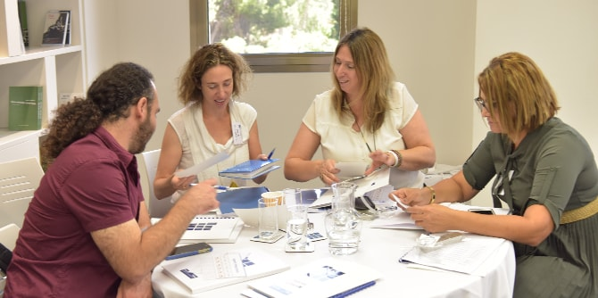

As part of its continuation program for graduates of the Mandel School for Educational Leadership, the Mandel Graduate Unit held an event focusing on the challenges that graduates face when returning to the field upon completion of their studies. The event included a session titled “Where I’m At,” in which graduates shared details of their professional work with their colleagues and with the Mandel Graduate Unit’s staff.
The event began with a presentation by Mandel Graduate Unit staff members Sharona Bar-Nes and Dr. Yehuda Maimaran on the difference between technical challenges, which are problems for which solutions exist, and adaptive challenges, which require learning and creating new knowledge and understanding in order to change the structure and operation of the organization in question..
Next, the graduates split into three groups and were introduced to a model for sharing professional challenges with colleagues. This method creates a structured framework for consultation that is well-defined and time-limited, and requires participants to be precise with their questions and to focus the discussion only on relevant information. The model is based on the premise that the group is an important resource for professional knowledge that is mutually beneficial to all its members; it facilitates examination of issues from multiple perspectives and makes it possible to suggest new interpretations and new courses of action.

{kind=link}